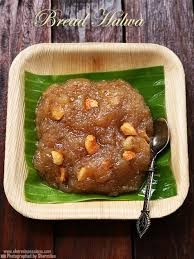

Bread ka Halwa

Bread Halwa (Bread Sheera) is a delicious Indian sweet or dessert made using bread slices and a handful of ingredients.
Ingrediants
Bread – White milk bread or sweet white bread slices are best for making this halwa. I don’t prefer using brown bread or other hard bread, and I don’t use stale bread. If the bread is not fresh, it crumbles a lot while frying, making the ghee unusable for multiple batches.
You can also use sweet buns instead of bread and call it bun halwa.
Ghee - This halwa is cooked in ghee. Do not replace it with oil; it won’t taste good.
Nuts - I have used cashew nuts and almonds, but you can add other nuts like pistachios, walnuts, etc. Some people garnish this delicious dessert with melon seeds, also.
Sugar - Granulated white sugar is used to sweeten the halwa. You can replace sugar with powdered jaggery or brown sugar if you wish.
Cardamom Powder -Use it to flavor the halwa.
You can add some saffron strands to make the halwa more flavorful.
How To Make Bread Halwa
- Cut the brown edges of 6 white bread slices using a sharp serrated knife and cut the slices into 4 pieces.
- Heat 2 cups of ghee for frying in a shallow pan over medium heat.
- Once the ghee is hot, deep fry the bread pieces in batches until golden brown.
- Keep flipping the pieces using tongs while frying so that they fry evenly on all sides.
- Drain on a plate and set aside.
Note – Do not over-fry the bread; the halwa will not taste good. The residual heat will cause the bread to keep browning a little.
Tip – Strain the leftover ghee using a fine-mesh strainer and use it to make other sweets.
- Heat 1 tablespoon ghee in a pan over medium heat.
- Add 10-12 almonds (coarsely crushed) and 10-12 cashew nuts (coarsely crushed) and fry until golden brown. Stir frequently while frying.
- Add ½ cup granulated white sugar and 1 cup water to the pan.
- Cook until sugar is dissolved, stirring frequently.
- Reduce the heat to low and cook for 5 minutes.
- Now add the fried bread slices to the pan and cook for 8-10 minutes until the halwa leaves the sides of the pan.
- Keep mashing the halwa with the back of a ladle.
- Once the halwa is cooked, add ½ teaspoon of cardamom powder and mix well.
For Paneer recipe click on the below given link :
Paneer Recipe